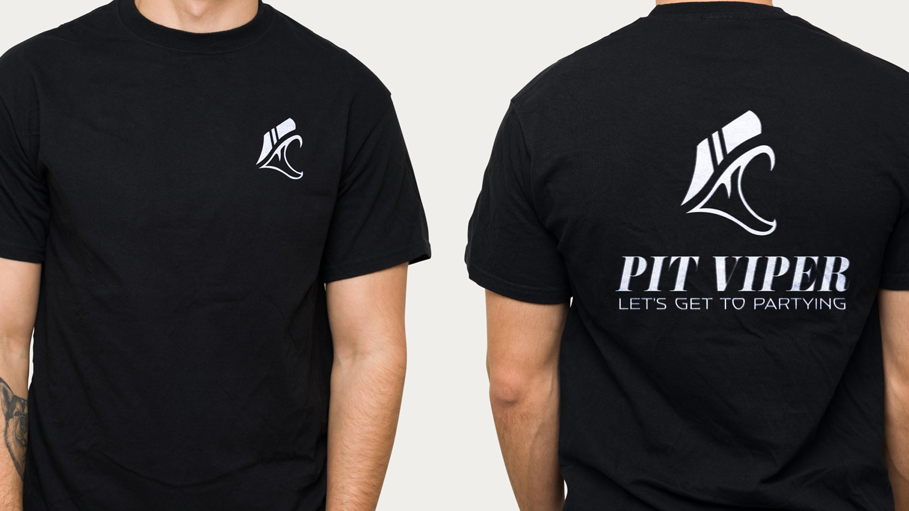
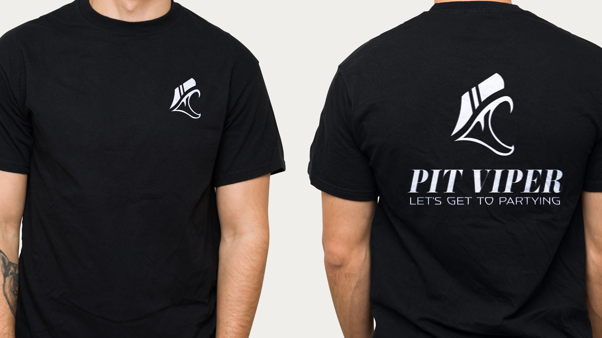

Reimagining Tourism
A logo design for an international city that captures its spirit, arts, culture, and being.

About the Project
Here to Party
The goal was to create the face of the company while maintaing its wild spirit. Pit Viper is a fun care-free company that sells unique and vibrant eyewear.
Research and Sketching
What is Pit Viper? Is it more than snake? Is it a state of being? These are questions I asked myself while looking into the brand and sketching logo-designs that I saw fit to represent the company made for 'key players'. The following si a video of my design process as well as the final product.
Scope
Project Type: Brand Identity
Software: Illustrator
Iterations
Option 1: Keyplayer
For this design I wanted to create a keyplayer. A figure that represents the "serious about taking things less seriously" brand. Taking the Pit Viper out and focusing on the spirit of the company.
Option 2: Snake Eyes
This redesign takes a more direct approach, a silloutte of snake eyes without seeing a full bodied viper. Dark, bold, and a little more serious.
Option 3: Cyclops
The third design combines the loud and vibrant nautre of the company while also hinting to the main product. Who doesn't love a viper with visors?
Final Iteration + Color
 
